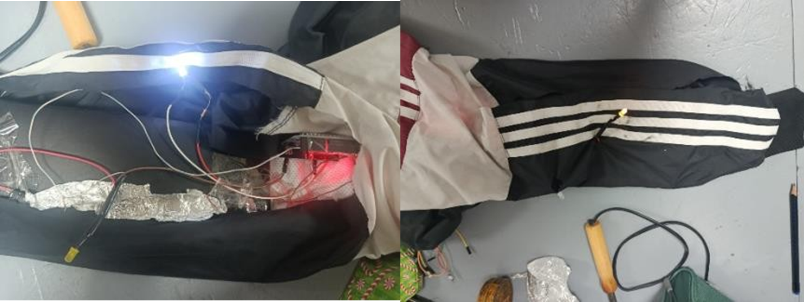
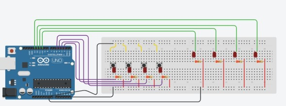
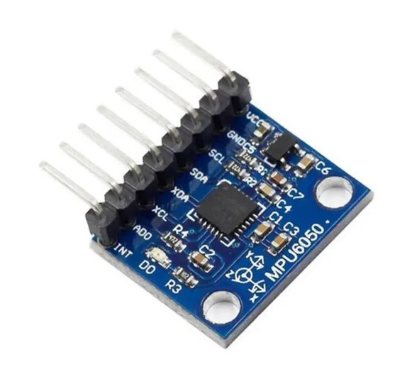
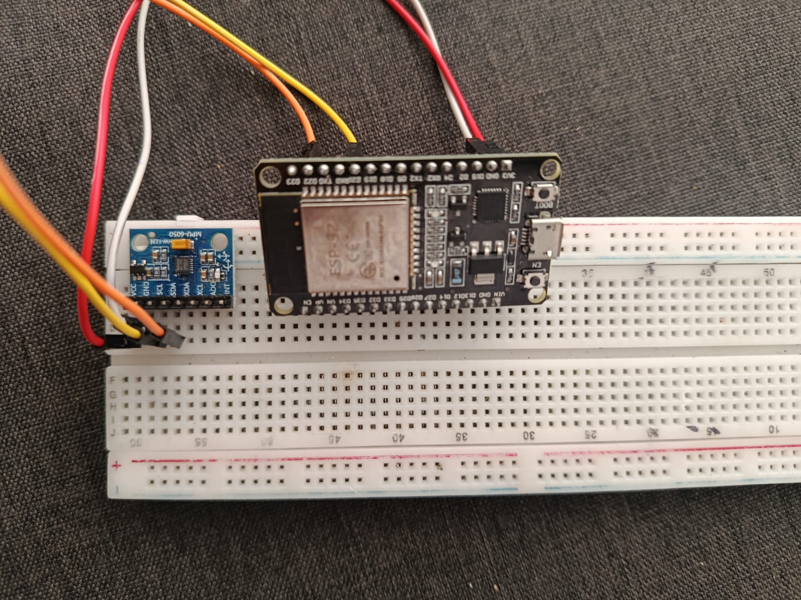
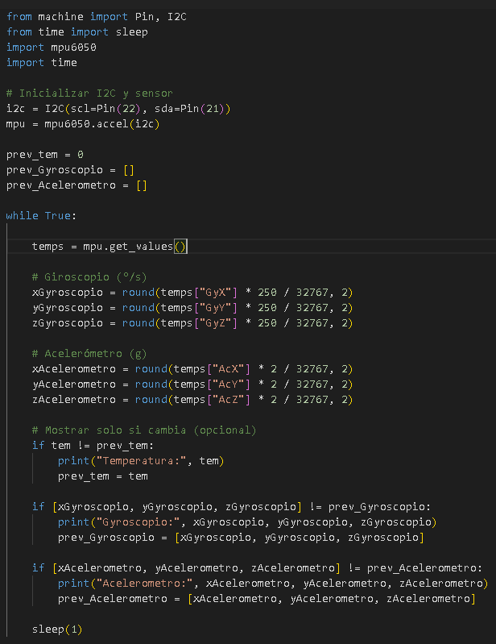

OBJETIVOS
Especificos
Objetivo Especifico # 1
1)Realizar los debidos procedimientos para implementar los sistemas Arduino y/o ESP32 al proyecto .
Objetivo Especifico # 2
2)Utilizar acelerómetro mpu6050 para mediciones mas precisas para hallar la velocidad ala que se impacta el usuario
Objetivo Especifico # 3
3) Concretar prototipo base del sistema que se puede implementar dentro de la chaqueta, realizando mediciones precisas a los puntos clave durante los posibles accidentes.
Objetivo Especifico # 4
Dar la documentación necesitada y acorde al proyecto Security Jacket; especificando los pasos realizados hasta el punto, cronogramas, costos e información relevante.
Audiovisuales
Material Audiovisual de Security Jacket
Promocional 4to Trimestre
El video introductorio al proyecto Security Jacket correspondiente al cuarto semestre, cuenta con la narración correspondiente a los integrantes del equipo y planteamiento de forma resumida del proyecto.
Segundo prototipo
Panteamiento
Primer Prototipo
En primer lugar se realizó una pequeña incisión en la parte baja del brazo de la chaqeta, se realizaron otros dos cortes para poder ver las señales de los leds, en el fondo de la manga estaría el Arduino de tal manera que el circuito integrado no se desarmará.
Este Arduino lleva consigo un código que permite dar una señal, cuando el circuito este abierto, simulando un impacto cuando el papel aluminio se rasga. Como se muestra en la siguiente imagen.
Inicialmente se iban a implementar cuatro circuitos en el brazo para este primer prototipo, sin embargo, al momento de ensamblar cada mini circuito, hubo un problema de señal el cual afectaba a todo el sistema. Por esta razón se tomo la decisión de utilizar un solo circuito


MPU6050
El MPU6050 es un sensor inercial de seis grados de libertad (6 DOF), ampliamente utilizado en sistemas electrónicos y de control. Este dispositivo integra en un solo circuito un acelerómetro y un giroscopio triaxiales, lo que permite medir tanto la aceleración lineal como la velocidad angular en los tres ejes espaciales (X, Y y Z).
El acelerómetro del MPU6050 mide la aceleración lineal a la que está sometido el dispositivo, incluyendo la aceleración debida a la gravedad. Esto permite determinar la inclinación del sensor respecto a un plano de referencia. Por otro lado, el giroscopio mide la velocidad angular, es decir, la rapidez con la que el sensor rota alrededor de cada uno de sus ejes.
El funcionamiento interno del acelerómetro se basa en microestructuras mecánicas que detectan cambios en la aceleración mediante variaciones en la capacitancia. En el caso del giroscopio, este opera mediante el efecto Coriolis, el cual permite detectar rotaciones al analizar desviaciones en estructuras vibrantes internas.

Planteamiento
El prototipo de Security Jacket se puede resumir con elementos simples dispuestos que demostraran el
debido funcionamiento, para ello se utilizaran los siguientes elementos:
1. Fuente de 5v
2. Esp32
3. Sensor mpu 6050
Implementación del sensor MPU6050 en el proyecto Security Jacket
En el proyecto denominado Security Jacket, el sensor MPU6050 se implementa como un módulo fundamental
para la detección de movimiento, orientación e inclinación del usuario. Su integración permite monitorear
cambios bruscos en la posición del cuerpo, lo cual resulta útil para aplicaciones de seguridad, como la
detección de caídas o movimientos inusuales.
El sensor se conecta a un microcontrolador, en este caso un ESP32, mediante el protocolo de comunicación I2C,
utilizando las líneas SDA (datos) y SCL (reloj). A través de esta interfaz, el microcontrolador obtiene en
tiempo real los datos de aceleración (Ax, Ay, Az) y velocidad angular (Gx, Gy, Gz).
Desarrollo
Diagrama de flujo del Acelerometro Security Jacket
Funcionamiento general
1. Inicializa el sensor
2. Lee datos continuamente
3. Convierte valores a unidades físicas
4. Detecta cambiosbr
5. Muestra solo información relevante

Relación del proyecto con sistemas PLC: El proyecto basado en el sensor MPU6050 puede asociarse con conceptos fundamentales de los Controladores Lógicos Programables (PLC), ya que su funcionamiento sigue una estructura similar al ciclo de operación industrial. Entradas El acelerómetro y giroscopio funcionan como sensores que proporcionan datos del entorno, equivalentes a las entradas analógicas de un PLC. Estos datos representan variables físicas como aceleración y velocidad angular. El sistema realiza comparaciones y toma decisiones mediante estructuras condicionales, similares a la lógica programada en lenguajes de PLC como Ladder o Structured Text. Esto permite identificar cambios en las variables medidas.
Armado del circuito

Codigo Acelerometro- Wokwi

Conclusiones
El acelerómetro MPU5060 se adapta correctamente a la finalidad de nuestro proyecto, ya que logra captar con precisión los datos de recolección al momento de utilizar la chaqueta con la motocicleta, generando que se deba acoplar a la galga extensiométrica y a los piezoeléctricos.
Al agregar el acelerómetro simplifica el circuito lo que ocasiona que los recursos necesarios para la finalización del prototipo sean más accesibles.
LA ESP32 se adapta con lo necesario para nuestro proyecto ya que se puede conectar por medio de diferentes medios a WIFI y bluetooth, con las configuraciones de Arduino IDE se puede realizar el envió a los socorristas y logre la atención al usuario.

Tecnologia a usar

Tablas
Matriz de Riesgos y Cronograma de Actividades

Diagrama de Gantt
Información detallada sobre el Cronograma de Gantt

Matriz de Riesgos
Información detallada sobre la matriz
EQUIPO DE SECURITY JACKET
Integrantes del Proyecto

JHON JAIRO BRANGO VELASQUEZ
JHON JAIRO BRANGO VELASQUEZ
Integrante # 1
Estudiante de Tecnologia de Automatización Industrial

ARIAN JESUS DUARTE AVILA
ARIAN JESUS DUARTE AVILA
Integrante # 2
Estudiante de Tecnologia de Automatización Industrial

DAVID PAEZ MARTINEZ
DAVID PAEZ MARTINEZ
Integrante # 3
Estudiante de Tecnologia de Automatización Industrial
Encuesta
Preguntas